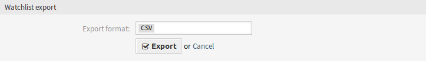

关注列表管理¶
使用此屏幕可以管理关注列表。 关注列表管理屏幕可在 工单 菜单的 关注列表管理 菜单项中使用，也可以通过工具栏上的眼睛图标使用。

关注列表管理屏幕
管理关注列表¶
若要添加一个关注列表：
- 点击左侧边栏中的 创建新关注列表 按钮。
- 填写必填字段。
- 点击 提交 按钮。

添加关注列表屏幕
若要查看一个关注列表中的工单：
- 在关注列表清单中单击一个关注列表。
- 在概览表中查看工单。

关注列表详情屏幕
若要编辑一个关注列表：
- 在关注列表清单中单击一个关注列表。
- 点击左侧边栏中的 编辑关注列表 按钮。
- 修改字段。
- 点击 提交 按钮。

编辑关注列表屏幕
若要为一个关注列表指派副手：
- 在关注列表清单中单击一个关注列表。
- 单击左侧边栏中的 为关注列表指派副手 按钮。
- 从列表中选择一个服务人员副手。
- 点击 提交 按钮。

关注列表副手屏幕
若要更改关注列表所有者：
- 在关注列表清单中单击一个关注列表。
- 点击左侧边栏中的 更改关注列表所有者 按钮。
- 从列表中选择一个服务人员。
- 点击 提交 按钮。

关注列表所有者屏幕
警告
原所有者服务人员将无法再访问关注列表。
若要从关注列表导出工单列表，请执行以下操作：
- 在关注列表清单中单击一个关注列表。
- 单击左侧边栏中的 导出工单列表 按钮。
- 选择输出格式。
- 点击 导出 按钮。
- 将文件保存在文件系统中的某个位置。

关注列表导出屏幕
若要删除一个关注列表：
- 在关注列表清单中单击一个关注列表。
- 点击左侧边栏中的 删除关注列表 按钮。
- 点击确认对话框中的 确认 按钮。

删除关注列表屏幕
可以在 工单详情 屏幕上将工单添加到关注列表或从关注列表中删除工单。
关注列表设置¶
添加或编辑此资源时，可以使用以下设置。 标有星号的字段是必填字段。
- 关注列表名称 *
- 此资源的名称。 可以在此字段中输入任何类型的字符，包括大写字母和空格。 名称将显示在概览表中。
- 新的服务人员信件
- 在服务人员将注释添加到已在关注列表中的工单时，如果要通知监视列表所有者，则设置为 是。
- 新的客户信件
- 当客户用户在外部人员界面中创建信件时，如果应通知关注列表所有者，则设置为 是。
- 新的所有者
- 当已添加到关注列表的工单具有新所有者时，如果应通知关注列表所有者，则设置为 是。
- 新队列
- 当添加到关注列表的工单已移动到其它队列时，如果应通知关注列表所有者，则设置为 是。
- 新的状态
- 当添加到关注列表的工单的状态更改时，如果应通知关注列表所有者，则设置为 是。
- 目标状态
此处选择的状态将激活上面的 新状态 通知。仅当新状态与配置的目标状态匹配时，才会发送状态更改通知。
如果 新状态 通知设置为 是，则此字段变为必需字段。
关注列表所有者及其副手可以分别配置通知。目标状态的配置仅允许关注列表所有者使用，也会影响副手。
通知不会发送到触发该操作的服务人员。
参见
可以在管理员界面的 工单通知 模块中编辑通知的内容。